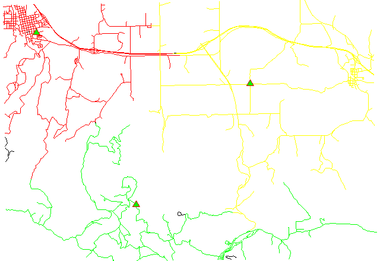
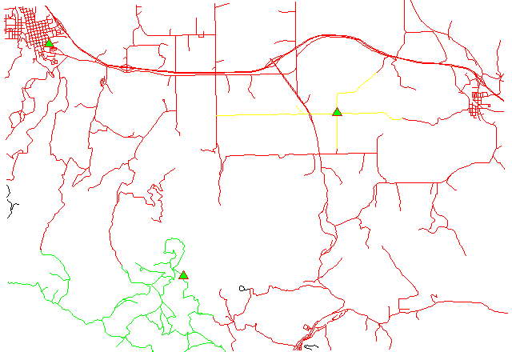

Costs may be either line lengths, or attributes saved in a
database table. These attribute values are taken as costs of whole
segments, not as costs to traverse a length unit (e.g. meter) of the
segment. For example, if the speed limit is 100 km / h, the cost to
traverse a 10 km long road segment must be calculated as
length / speed = 10 km / (100 km/h) = 0.1 h.
Supported are cost assignments for both arcs and nodes,
and also different costs for both directions of a vector line.
For areas, costs will be calculated along boundary lines.
The input vector needs to be prepared with v.net operation=connect in order to connect points representing center nodes to the network.
Center nodes can also be assigned to vector nodes using wxGUI vector digitizer.
1. Subnetwork allocation using distance:

2. Subnetwork allocation using traveling time:

Example 1: Calculating subnets for 3 center nodes using distances
# Spearfish # center nodes: echo "591235.5|4926306.62|1 596591.8|4917042.5|2 602722.9|4923544.2|3" | v.in.ascii in=- out=centernodes g.copy vect=roads,myroads # connect points to network v.net myroads points=centernodes out=myroads_net op=connect thresh=200 # allocate, specifying range of center cats (easier to catch all): v.net.alloc myroads_net out=myroads_net_alloc ccats=1-100000 nlayer=2 # report categories v.category myroads_net_alloc option=report
# show result g.region vect=myroads_net d.mon x0 d.vect myroads_net layer=1 # the result has to be selected by category number of the relevant node: d.vect myroads_net_alloc cat=1 col=red layer=1 d.vect myroads_net_alloc cat=2 col=green layer=1 d.vect myroads_net_alloc cat=3 col=yellow layer=1 # center nodes d.vect myroads_net col=red icon=basic/triangle fcol=green size=12 layer=2
Example 2: Calculating subnets for 3 center nodes using traveling time
# Spearfish # center nodes: echo "591235.5|4926306.62|1 596591.8|4917042.5|2 602722.9|4923544.2|3" | v.in.ascii in=- out=centernodes g.copy vect=roads,myroads # create lines map connecting points to network v.net myroads points=centernodes out=myroads_net op=connect thresh=500 alayer=1 nlayer=2 # set up costs # create unique categories for each road in layer 3 v.category in=myroads_net out=myroads_net_time opt=add cat=1 layer=3 type=line # add new table for layer 3 v.db.addtable myroads_net_time layer=3 col="cat integer,label varchar(43),length double precision,speed double precision,cost double precision,bcost double precision" # copy road type to layer 3 v.to.db myroads_net_time layer=3 qlayer=1 opt=query qcolumn=label columns=label # upload road length in miles v.to.db myroads_net_time layer=3 type=line option=length col=length unit=miles # set speed limits in miles / hour v.db.update myroads_net_time layer=3 col=speed val="5.0" v.db.update myroads_net_time layer=3 col=speed val="75.0" where="label='interstate'" v.db.update myroads_net_time layer=3 col=speed val="75.0" where="label='primary highway, hard surface'" v.db.update myroads_net_time layer=3 col=speed val="50.0" where="label='secondary highway, hard surface'" v.db.update myroads_net_time layer=3 col=speed val="25.0" where="label='light-duty road, improved surface'" v.db.update myroads_net_time layer=3 col=speed val="5.0" where="label='unimproved road'" # define traveling costs as traveling time in minutes: # set forward costs v.db.update myroads_net_time layer=3 col=cost val="length / speed * 60" # set backward costs v.db.update myroads_net_time layer=3 col=bcost val="length / speed * 60" # subnetwork allocation with fastest paths v.net.alloc in=myroads_net_time alayer=3 nlayer=2 afcol=cost abcol=bcost out=myroads_net_alloc_time ccats=1-3
# show result g.region vect=myroads_net d.mon x0 d.vect myroads_net type=line layer=1 # the result has to be selected by category number of the relevant node: d.vect myroads_net_alloc_time cat=1 col=red layer=1 d.vect myroads_net_alloc_time cat=2 col=green layer=1 d.vect myroads_net_alloc_time cat=3 col=yellow layer=1 # center nodes d.vect myroads_net_time col=red icon=basic/triangle fcol=green size=12 type=point layer=2
Last changed: $Date$